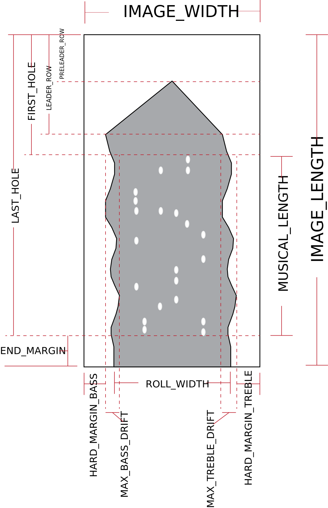

| Parameter name | Example parameter value | Description |
|-----------------------|------------------------------------------------|----------------------|
| TITLE | Waltz, op. 70, no. 1 | The title of the composition(s) on the roll, as listed in the Stanford Libraries' card catalog (SearchWorks). |
| COMPOSER | Chopin, Frédéric (1810-1849) | The composer(s) of the music on the roll, as listed in SearchWorks. |
| PERFORMER | Bloomfield-Zeisler, Fannie (1863-1927) | The performer(s) of the music on the roll, as listed in SearchWorks. |
| DRUID | zw904vm6502 | Stanford Libraries' Digital Repository Unique ID in the format AA000AA0000 of letters and digits. This is the ID for the original scan of a piano roll and all derivative files associated with the scan.
| PURL | https://purl.stanford.edu/zw904vm6502 | URL that links to online viewer for the original scan, plus download links for audio and MIDI extracted from scan. the PURL is based on the DRUID number. |
| CATKEY | 11048724 | Catalog Key number for SearchWorks. |
| SEARCHWORKS | https://searchworks.stanford.edu/view/11048724 | SearchWorks URL for roll. The DRUID always describes a unique physical roll. The catkey represents the manufacturer's edition of the roll (but in most cases, the catkey also refers to a specific physical roll since there can be alterations between different copies of the rolls). |
| LABEL | Welte-Mignon 1465 | The manufacturer's number for the roll. |
| CALLNUM | Stanford Libraries CONDON ROLL 460 | The Stanford Libraries' call number for the physical roll. |
| REISSUE | yes | Taken from the metadata for the catkey: if "yes" then roll is a later reprint (either authorized, or a recutter's copy). |
| ROLL_TYPE | welte-red | The roll format (descriptor identify what type of piano the roll can be played back on). |
| MANUAL_EDITS | no | If there are any manual edits to the MIDI data after automatic extraction, set this parameter to "yes". |
| MIDIFILE_TYPE | exp | The type of MIDI file. "raw" is the first MIDI file extracted from the image, and then an "exp" MIDI file has the expression tracks applied to the note velocities (and added sustain and soft pedaling). |
| SOURCE | SUPRA: Stanford University Piano Roll Archive | Group name for the digigized collections available at https://supra.stanford.edu, coming from various collections in the library, such as the Condon Collection for this roll. |
| LICENSE | CC BY-NC-SA 4.0 | Blanket license for MIDI files on the SUPRA website or from Stanford Libraries' PURLs. |
Image-analysis parameters

The following parameters are related to the initial process of extracting musical
information from the scan of a piano roll. These parameters are useful to
know when aligning the MIDI file data with the original image. Scanned images
of rolls always present the bass register on the left. For red Welte-Mignon
rolls, this will display the text in the label as upside down (180 degree
rotation); for most other rolls, the label will be upside down and mirrored
horizontally along a vertical axis.
The diagram on the right shows the locations of various parameter
measurements. The length of the image is segmented in four locations:
(1) PRELEADER_ROW is the pixel row of the start of the roll
at the tip of the leader; (2) LEADER_ROW is the pixel row
of the end of the leader (approximately); (3) FIRST_HOLE is
the pixel row of the first musical hole on the roll (sometimes
includes accidental holes); (4) LAST_HOLE is the pixel row
of the end of the last musical hole in the image. The row length
of two vertical sections of the row are also given: (1)
MUSICAL_LENGTH is the number of pixel rows between the start
of the first musical hole and the end of the last musical hole; (2)
END_MARGIN is the pixel row length between the end of the
last musical hole and the bottom of the image.
The two HARD_MARGIN parameters specify the width of the margin on the
left and right sides of the image where the roll does not enter within the
MUSICAL_LENGTH. The two MAX_DRIFT parameters gives the additional
"soft margin" width inside of the hard margin, where the roll edge will oscillate
within during the musical-length region.
Other parameters are mostly related to quality control of the physical roll
and image, including parameters counting the number of tears on the edge of the
roll, dust in the image margins, and counts of suspicious holes.
| Parameter name | Example parameter value | Description |
|-----------------------|------------------------------------------------|----------------------|
| SOFTWARE_HOLE | https://github.com/pianoroll/roll-image-parser | URL for software that extracted hole data from roll image. |
| THRESHOLD | 249 | The brightness threshold for separating paper from background (255 is the max value). |
| LENGTH_DPI | 300.25ppi | Scan DPI resolution along the length of the roll (measured on Stanford's roll scanner November 2017 within an accuracy of +/– 0.25 DPI and may drift slightly upwards over time). |
| IMAGE_WIDTH | 4096px | The width of the source image in pixels. |
| IMAGE_LENGTH | 96240px | The length of the source image in pixels. |
| ROLL_WIDTH | 3903.04px | Measured average width of the piano-roll in pixels (within the musical notes range of the roll). |
| HARD_MARGIN_BASS | 47px | Pixel width of the margin on the bass side of the roll where the roll paper never enters. |
| HARD_MARGIN_TREBLE | 143px | Pixel width of the margin on the treble side of the roll where the roll paper never enters. |
| MAX_BASS_DRIFT | 4px | Maximum range of the "soft" margin on the bass side: the margin area where the roll edge will temporarily enter. |
| MAX_TREBLE_DRIFT | 4px | Maximum range of the "soft" margin on the treble side: the margin area where the roll edge will temporarily enter. |
| AVG_SOFT_MARGIN_SUM | 2.96px | Average sum of the bass and treble soft margins. A soft margin is the region on the edge of the roll that the paper may oscillate with. This value is similar to the DRIFT_RANGE parameter. |
| DRIFT_RANGE | 2.41px | Total range of left/right drift of roll over entire scan (in music region only). Values larger than the hole track separations is not ideal (but compensated for in the software analysis). |
| DRIFT_MIN | 1.18px | Leftmost drift of roll from average position in pixels. |
| DRIFT_MAX | -1.23px | Rightmost drift of roll from average position in pixels. |
| PRELEADER_ROW | 2513px | Last pixel row of the portion of the image that contains the velcro strap which initially pulls the roll. |
| LEADER_ROW | 3845px | Last pixel row of the leader (although text on the roll may continue). |
| FIRST_HOLE | 12595px | Pixel row of the first musical hole (can sometimes be a false-positive due to a unintentional hole). |
| LAST_HOLE | 90531px | Pixel row of end of the last musical hole. This includes the rewind hole and any musical holes (such as a test pattern) after the rewind hole. |
| END_MARGIN | 5709px | IMAGE_LENGTH – LAST_HOLE |
| MUSICAL_LENGTH | 77936px | Pixel row count from the first music hole to the end of the last music hole. |
| MUSICAL_HOLES | 3474 | Number of musical holes before removing bridging (may include unintentional holes). |
| MUSICAL_NOTES | 2232 | Number of musical holes after removing bridging (expression tracks also count). |
| AVG_HOLE_WIDTH | 21.93px | Average width of a musical hole punch in pixels (based on holes' bounding boxes). |
| ANTIDUST_COUNT | 103 | Number of holes smaller than 1/6th of a punch, i.e., less than 50 pixels in area. These are either unintentional holes in the paper or cause by the backlight in a thin region of the paper. |
| BAD_HOLE_COUNT | 1 | Number of suspicious holes on the roll. Holes that are not part of a bridge chain are removed since they likely indicate an unintentional hole/tear in the roll. |
| EDGE_TEAR_COUNT | 0 | Number of edge tears on both sides of the roll that are deeper than 1/10 of an inch. These tears have the potential to interfere with expressions (so manual inspection is required). |
| BASS_TEAR_COUNT | 0 | Number of tears on the bass-register side of the roll. |
| TREBLE_TEAR_COUNT | 0 | Number of tears on the treble-register side of the roll. |
| DUST_SCORE | 29ppm | Average of DUST_SCORE_BASS and DUST_SCORE_TREBLE The dust score is a count of non-background pixels present in the left/right margins of the roll image, due to usually to paper fibers from the rolls, but also fingerprints. A dust score over 2000 parts per million usually indicates problems in the scan. |
| DUST_SCORE_BASS | 0ppm | Dust score for the bass-register side of the image (should be the left side). Values less than 2000 parts per million are OK, values less than 250 ppm are ideal. |
| DUST_SCORE_TREBLE | 58ppm | Dust score for the treble-register side of the image (should be the left side). Values less than 2000 parts per million are OK, values less than 250 ppm are ideal. |
| SHIFTS | 0 | The number of automatically detected scanning operator shifts greater than 1/100th of an inch over 1/3 of an inch. A large number of shifts usually indicates a novice scanning operator. |
| HOLE_SEPARATION | 37.8177px | Distance between musical hole centers (i.e., the tracker bar hole spacings). |
| HOLE_OFFSET | -16.7534px | The offset of the tracker bar spacing pattern with respect to the first pixel column of the roll image. |
| TRACKER_HOLES | 100 | The number of tracker bar holes that reads this roll (usually manually set but could be inferred from the image automatically). |
| SOFTWARE_DATE | Mar 26 2019 16:32:26 | Date that the image-processing software that generate the MIDI file was compiled. |
| ANALYSIS_DATE | Sun Apr 7 20:26:59 2019 | Date on which the image-processing software was run to extract this MIDI data. |
| ANALYSIS_TIME | 10.84sec | Duration of analysis (excluding file reading/writing). |
| COLOR_CHANNEL | green | Color channel from the full 24-bit color image of the roll that was used to extract the MIDI data. |
| CHANNEL_MD5 | 819dc5d4f6f54e375650b6c9baf1cd8e | MD5 checksum of the channel pixels in the image, used to verify that the image has not been altered since the MIDI data was extracted. |
Expression parameters
The following parameters are added when the expression tracks are processed:
| Parameter name | Example parameter value | Description |
|-----------------------|------------------------------------------------|----------------------|
| EXP_SOFTWARE | https://github.com/pianoroll/midi2exp | The URL for the expression-processing software. |
| EXP_SOFTWARE_DATE | Apr 13 2019 16:52:47 | The date the expression-processing software was compiled. |
| EXP_DATE | Sat Apr 13 17:10:47 2019 | The date the expression-processing software was run on the MIDI file. |
| TRACKER_EXTENSION | 13px | The tracker-bar extension height added to each MIDI note/expression hole. |
| EXP_WELTE_P | 38 | The MIDI velocity representing the piano level. |
| EXP_WELTE_MF | 60 | The MIDI velocity representing mezzo forte level. |
| EXP_WELTE_F | 85 | The MIDI velocity representing forte level. |
| EXP_WELTE_LOUD | 70 | |
| LEFT_HAND_ADJUST | -5 | Bass-register MIDI velocity adjustment (-5 means it is five units quieter than treble register). |
| EXP_WELTE_SLOW_DECAY | 2380 ms (time from welte_p to welte_mf) | Slow decrescendo rate. |
| EXP_WELTE_FAST_CRES | 180 ms (time from welte_p to welte_mf) | Fast crescendo rate. |
| EXP_WELTE_FAST_DECRS | 170 ms (time from welte_p to welte_f) | Fast decrescendo rate. |
| RENDERED_TEMPO | 95 | Rendering tempo (should match the TPQ*6 value in the MIDI file header for most rolls). |
| BRIDGE_FACTOR | 1.37 | The maximum distance between holes that will cause them to be merged into a longer hole when the bridging is removed. The value 1.37 means that a distance of 1.37 times the diameter of a hole punch (AVG_HOLE_WIDTH).|